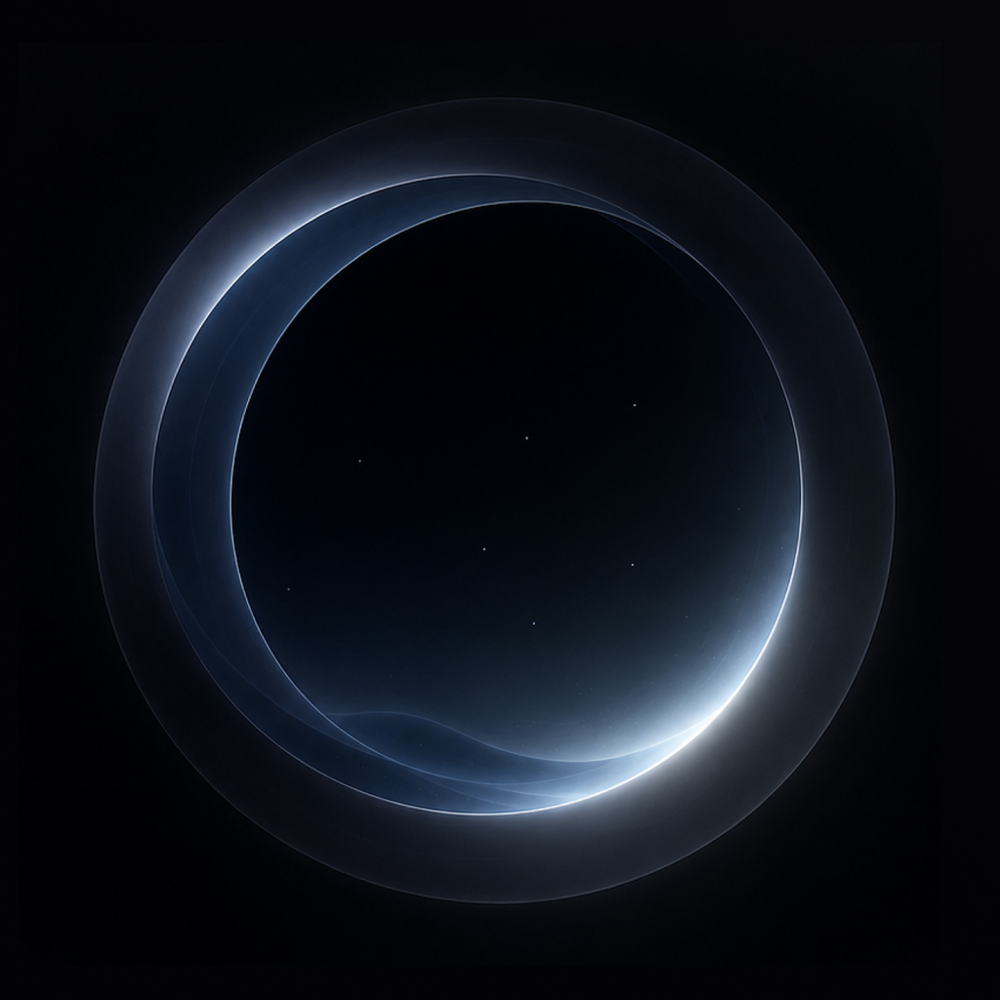

Resurfacing
A button that doesn't need a label
If the icon is the action, the word next to it is noise. Cut the word first.
Built from design/identity-2.1.md at app values: iPhone 17 Pro (402 × 874), tokens from oryne.tokens.json, copy from the screenshot seed. The picked direction is first; the earlier rounds follow, 2.0 on the left of each pair and the spec's 2.1 on the right. Glyphs are hand-drawn stand-ins for SF Symbols.
lift, standard and gentle curves, but the sinking rows are new motion and need your say.lift); the disc returns to rest (touch); the toast's leading glyph is the same ring at 14 pt, warm, cooling to the ring color as the toast settles.thoughtBody New York 19 in foam with +5 leading. Meta and Nearby are SF. Tiles at 10% with New York 17 titles.glyphHero 48 in surface, the line in New York 28.ringHero 48, 1.5 pt, ring color; the line in statement SF 22 medium. The second line's fate is not in the spec, so it stays as it is.
| Pair | 2.0 | 2.1 | Target |
|---|
Computed in sRGB from the token values (white at alpha composited over deep), not measured on a device.